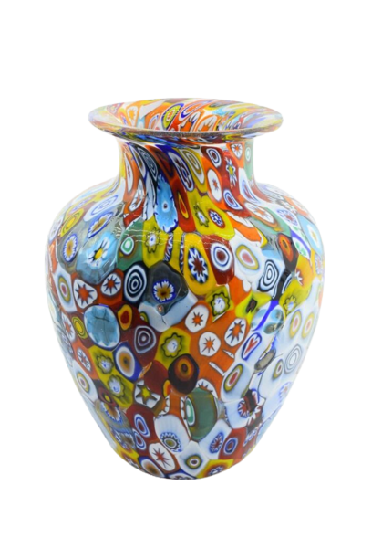
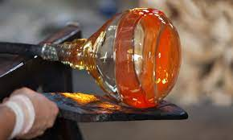

Murano, venetisch Muran, ist eine Inselgruppe nordöstlich der Altstadt von Venedig in der Lagune von Venedig. Sie ist bekannt für ihre Glaskunst, lebt aber auch vom Tourismus und – in wesentlich geringerem Umfang – vom Fischfang.
Besucht ihr die Insel, solltet ihr in jedem Fall eine der vielen Glasbläsereien besichtigen. Hier könnt ihr den Besitzern bei ihrem beeindruckenden Handwerk zusehen und schöne Souvenirs einkaufen. Insbesondere Vasen und alle möglichen Schmuckstücke werden gerne als Erinnerungsstück von Touristen mit nach Hause gebracht.In den Fabriken könnt ihr beobachten, wie das Glas erhitzt und dadurch weich gemacht wird. Aufgrund dieser Beweglichkeit kann es nun in alle möglichen Formen gebracht werden. Das Glas der Insel ist international bekannt. Es wird über Europa hinaus in weit entfernte Regionen der Welt exportiert. Auch wenn es mittlerweile in anderen Ländern kopiert wird, ist das Murano Glas eine Besonderheit. Die Herstellungstechniken bleiben der Allgemeinheit verwehrt und werden möglichst nur von Familie zu Familie weitergegeben. Die Glasbläserei sichert ihre Existenz und ist bis heute einer ihrer wichtigsten Berufszweige.


Die bunten Fassaden sind das eine. Mindestens genauso bekannt ist Burano für seine wunderschönen Spitzenstickereien in der Reticella Technik, die Ende des 19. Jahrhundert durch die Spitzenschule, Scuola di Merletti, neu belebt wurde. Im Museo del Merletto kannst Du heute noch echte Burano-Spitzen bewundern. Die Läden in den Gassen Buranos verkaufen meist nicht die teure Burano-Spitze, sondern billige Ware aus Asien.
Neben den Glasbläsereien lohnt sich in jedem Fall ein Besuch des Museums Museo del Vetro, in dem Glas und dessen Herstellung dargestellt wird. Auf interessante Art und Weise werden die einzelnen Schritte bis zum letztendlichen Ergebnis veranschaulicht. Zudem können bis zu 2000 Jahre alte, aber auch moderne Kunstgegenstände bewundert werden. Bekannt ist es insbesondere für seinen blauen Kelch, den ‚Coppa Barovier‚ aus dem 15. Jahrhundert. Tickets für das Glasmuseum können auch als Kombiticket zusammem mit dem Spitzenmuseum auf Burano erworben werden.Auf Murano dreht es sich jedoch nicht ausschließlich um Glas. Ihr könnt bei eurem Besuch auch andere interessante Sehenswürdigkeiten besichtigen – wie zum Beispiel eine der ältesten Kirchen der Region. Die Basilika ‚Santa Maria e Donato‚ stammt aus dem 7. Jahrhundert und besitzt einen einzigartigen Boden aus Mosaiksteinen. Weitere sehenswerte Gotteshäuser der Insel sind die Kirchen „San Pietro Martire“ und „Santa Maria degli Angeli“. Besuchenswert ist auch die geschichtsträchtige ehemalige Kirche Santa Chiara Murano. Interessiert ihr euch für Architektur, solltet ihr zum ‚Palazzo da Mula‚ spazieren. Diese Villa wurde im 15. Jahrhundert aus rotem Ziegelstein in der typischen Bauweise der Spätgotik erbaut. Sie umfasst einen noch gut erhaltenen Garten und diente früher als Sommersitz der reichen Einwohner Venedigs. Viele einzigartige Entdeckungen werdet ihr auf einem Spaziergang durch die kleinen Gassen und an den Kanälen machen, wo ihr den wahren, italienischen Charme der Insel spüren könnt.